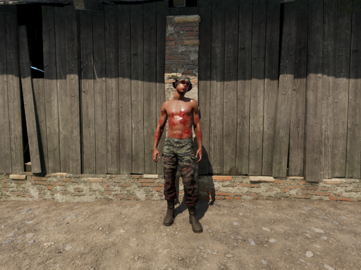
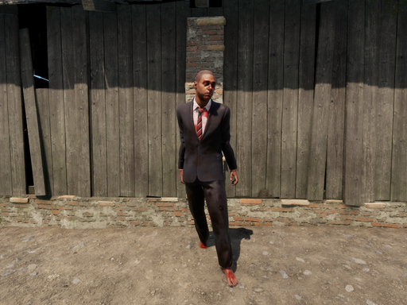
Slow
Shambler
The slow archetype. Numbers over speed: the wall that keeps coming while you reload.
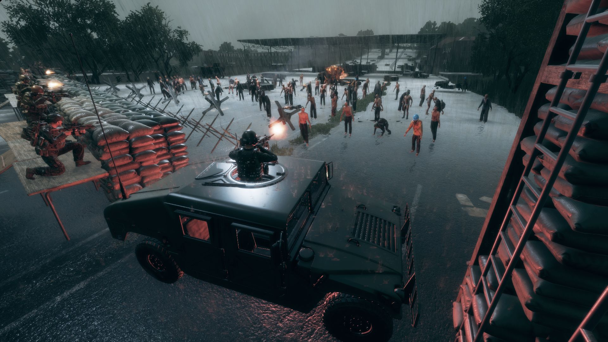
A custom zombie sandbox including slow, fast, and crawling Zombies. Place them through Game Master, or let ambient populations and directed waves shape an entire scenario.
Counted hourly from the public Arma Reforger server list by the Outbreak server watch (data from ArmaHQ). Players are the people on servers running the add-on, not subscribers.
Three archetypes ship in the core add-on, each with its own animations and behaviour, in civilian and military dress. Health and damage are yours to tune.


The slow archetype. Numbers over speed: the wall that keeps coming while you reload.
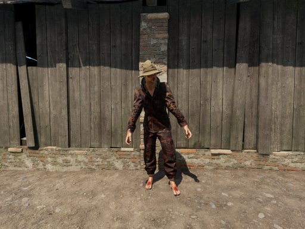
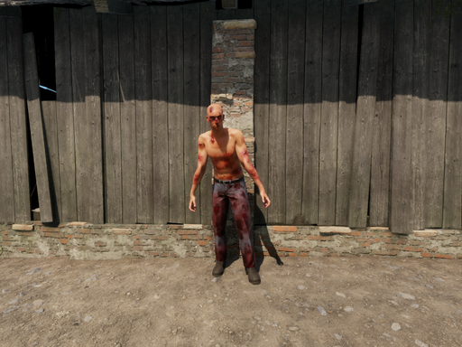
The fast archetype. Closes distance in seconds and tackles what it catches.
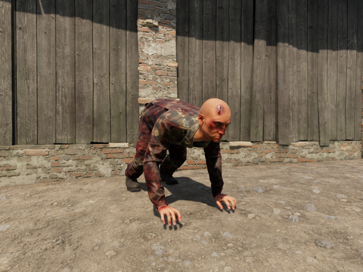
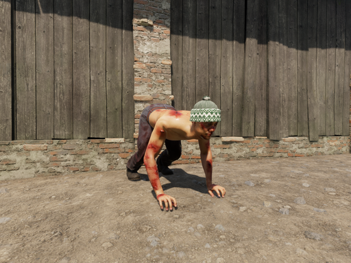
The crawling archetype. Low, quick and hard to spot in cover and crops.
Everything is placeable and configurable from the Game Master interface, on your own scenarios and servers.
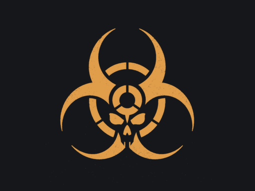
Screenshots from the Workshop listing.
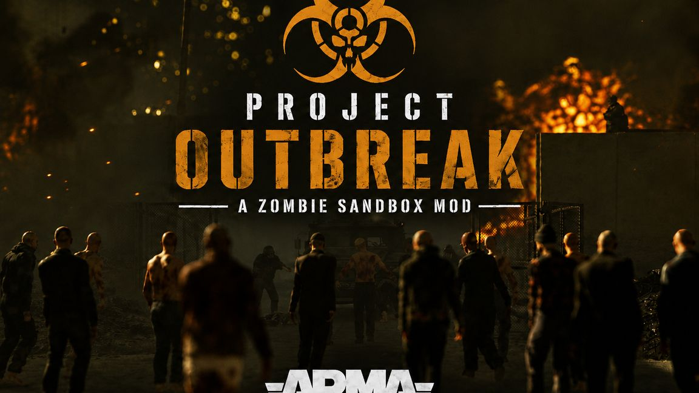
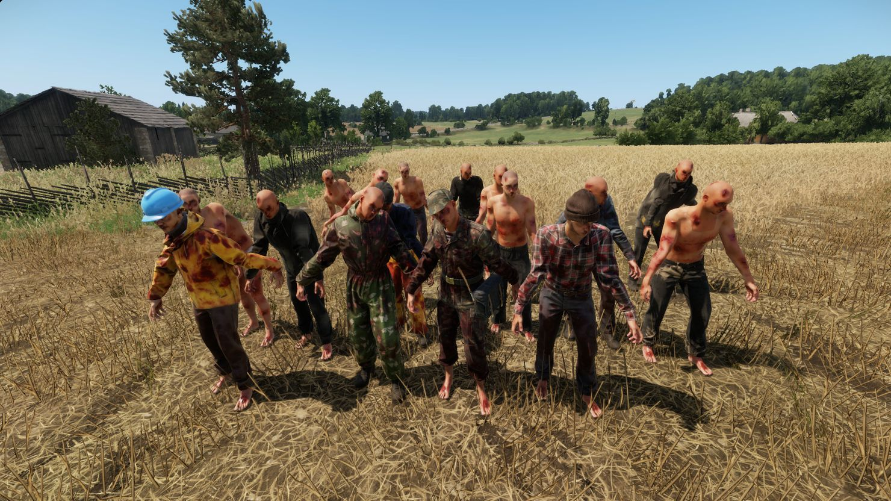
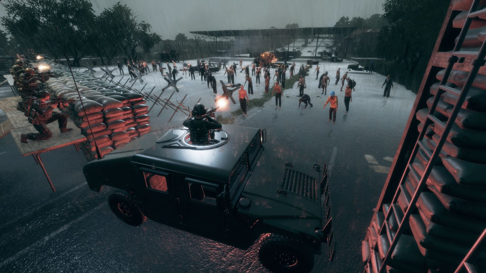
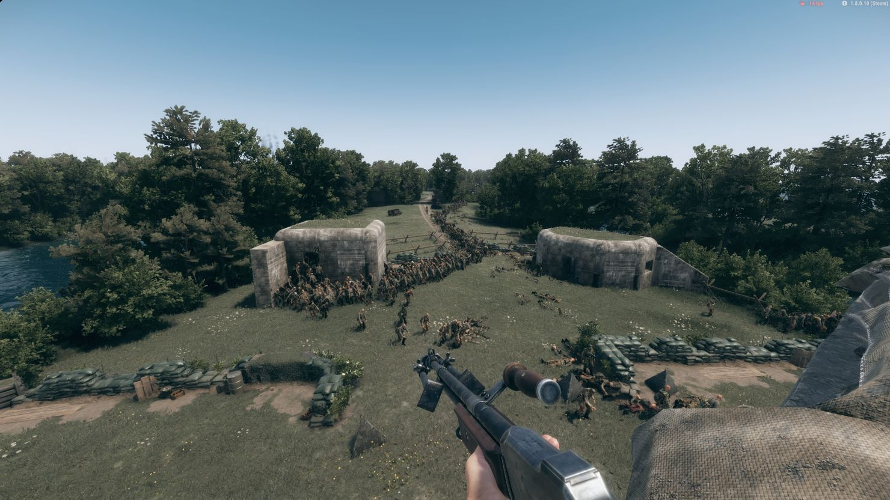
Optional modules extend the core add-on; Creature Melee AI is the foundation it runs on. Live server counts come from the Outbreak server watch.
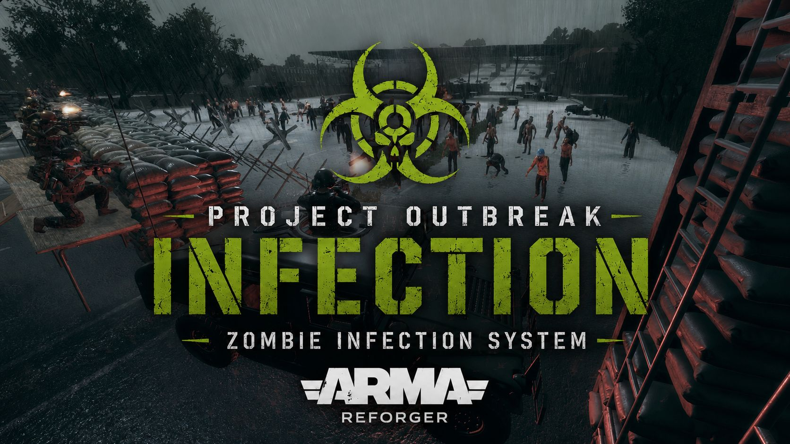
An optional infection system for Project Outbreak that turns infected into Zombies.
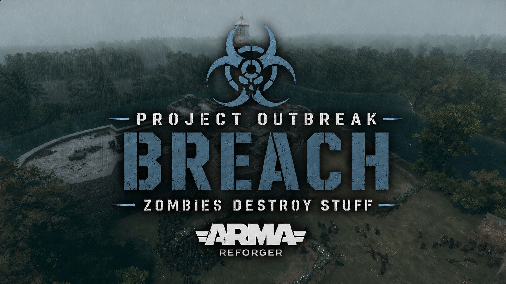
An optional destruction system that lets zombie pursuits continue through buildings and compounds by breaking doors and windows.
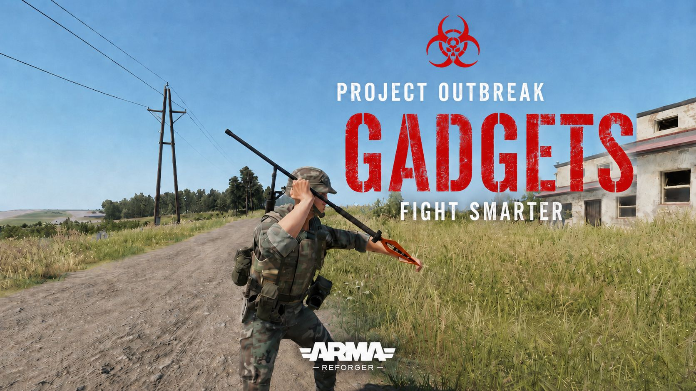
An equipment pack that gives players more options when a horde closes in.
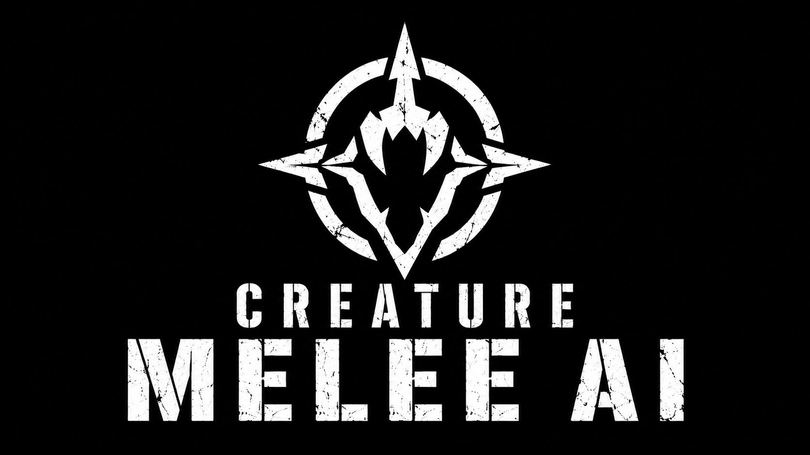
A flexible foundation for custom melee creatures.
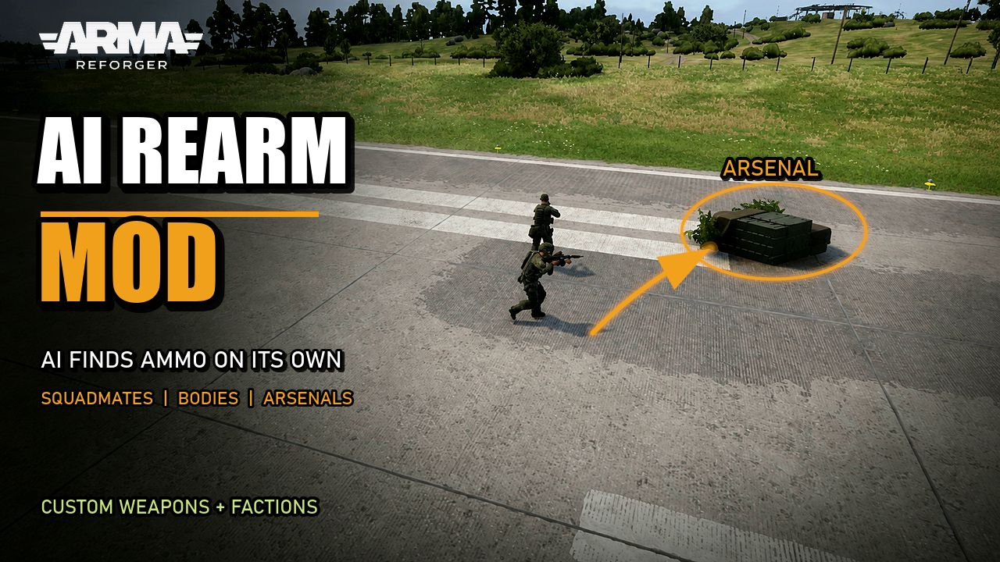
AI Rearm lets AI request magazines from squadmates, recover compatible ammunition from allowed dead bodies, and visit arsenals. A placeable Game Master settings system controls settings.
Published change notes, straight from the Workshop.
| Version | Published | Game | Size |
|---|---|---|---|
| 1.2.3 | 2026-09-07 | 1.8.0.13 | 164 MB |
| 1.2.2 | 2026-09-06 | 1.8.0.13 | 164 MB |
| 1.2.1 | 2026-09-05 | 1.8.0.13 | 164 MB |
| 1.2.0 | 2026-09-04 | 1.8.0.13 | 164 MB |
| 1.1.6 | 2026-09-02 | 1.8.0.10 | 137 MB |
| 1.1.5 | 2026-09-02 | 1.8.0.10 | 137 MB |
| 1.1.4 | 2026-09-01 | 1.8.0.10 | 137 MB |
| 1.1.3 | 2026-09-01 | 1.8.0.10 | 137 MB |
| 1.1.2 | 2026-09-01 | 1.8.0.10 | 137 MB |
| 1.1.1 | 2026-09-01 | 1.8.0.10 | 137 MB |